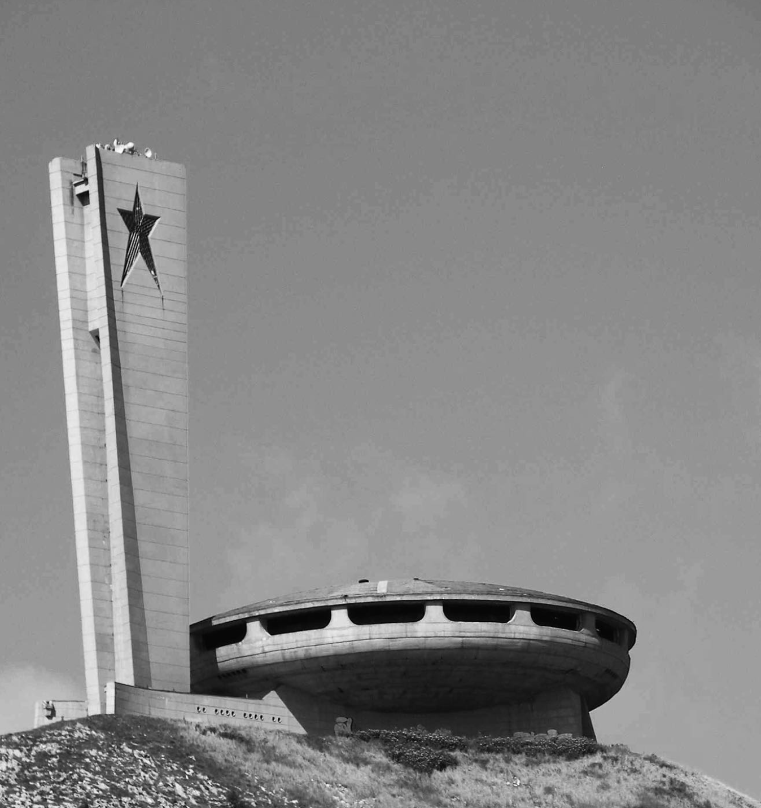
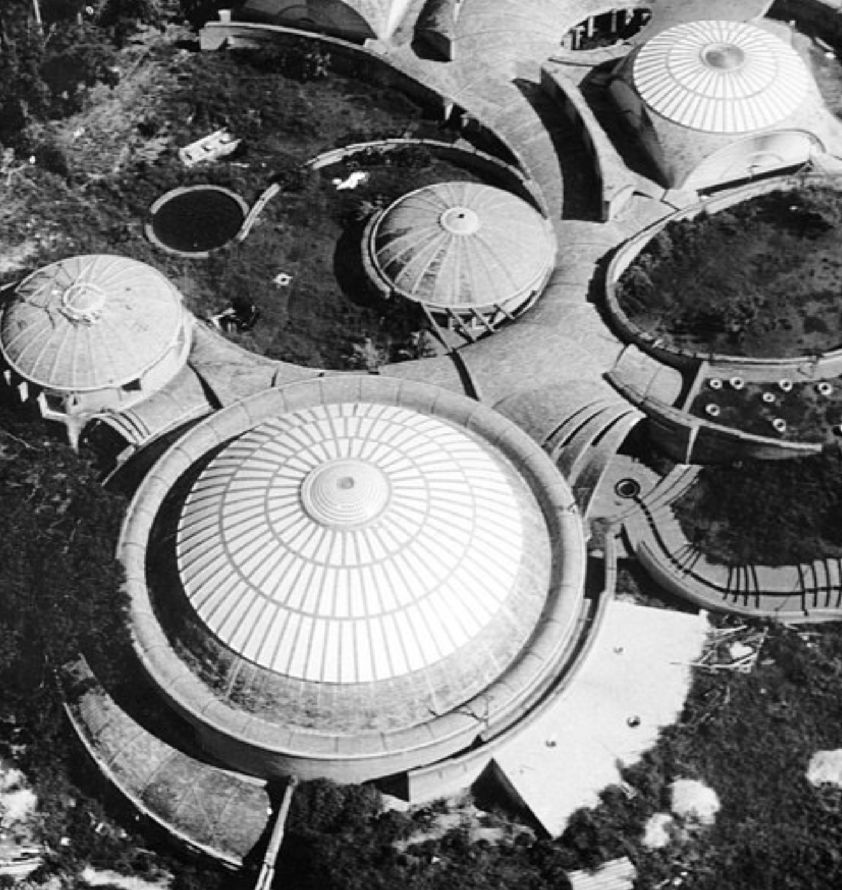

// PROJECT 05
Buzludzha
Buzludzha is an audiovisual performance built from the blocking of light in an interactive circuit. Pre-programmed as a sound instrument, the system is based on a combination of motion tracking techniques and generative sound algorithms.
Generated from the monument of the same name — former soviet congress hall of Bulgaria — the work is one of a series of projects inspired by abandoned fortresses and monuments. Spaces in which power once spoke, today inhabited by the order of time. These places, where solid structures crumble, corroded by the air and the continuous succession of days, have become empty pillars of what no longer matters.
The work was performed in the ruins of the School of Ballet at the University of the Arts of Cuba. Another abandoned place that reflects the failure of high ideals — another empty dome.
The project uses technology to generate an atmosphere where the relation of power and control of the performer (covering the cameras with their hands and trying to create a harmonic sense) is fragmented and decomposed, in a violent succession of sound alterations that are integrated and juxtapose in space. In the context of the work, sound becomes a tool that invades space through a succession of waves, impacting the walls or dissipating into the air.

Ruins of Buzludzha, former soviet congress hall of Bulgaria.

Ruins of the School of Ballet at the University of the Arts of Cuba.
Credits:
Photographs: Ossain Raggi & Pablo Victor Bordón
Video Documentation: Pablo Victor Bordón